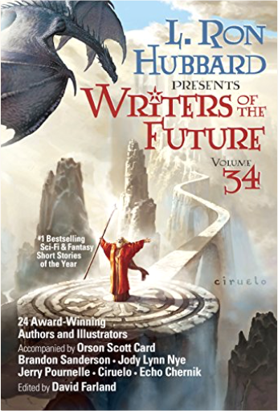

Pagan and Earth-Centered Voices in Unitarian UniversalismJerrie Kishpaugh Hildebrand, editor, Shirley Ann Ranck These 22 essays by some of the most prominent leaders in Unitarian Universalist Paganism bring Pagan and Earth-centered theo/alogy to life for a new generation. Featuring the writings of both clergy and laypeople, this vibrant collection demonstrates the many expressions of nature-based spirituality and the ways they feed the souls of so many. The essayists describe a broad array of practices, including Wiccan traditions, Neo-Pagan rituals and celebrations, worship of the divine feminine, and nature-based beliefs and practices that bring us into harmony and balance with our natural environment. Contributors also describe the development of nature-based theo/alogy within Unitarian Universalism including the organization of the Covenant of Unitarian Universalist Pagans, the addition of the sixth Source to the UUA bylaws recognizing Earth-centered spirituality, and the integration of Pagan practices into congregational life. Writers of the Future Vol 34: #1 Bestselling Sci-Fi & Fantasy Short Stories of the YearL. Ron Hubbard, Brandon Sanderson, Jody Lynn Nye, Orson Scott Card, Jerry Pournelle, Echo Chernik, Erik Bundy, Erin Cairns, Jonathan Ficke, Jeremy TeGrotenhuis, Vida Cruz, Darci Stone, Cole Hehr, Janey Bell, Eneasz Brodski, N.R.M. Roshak, Diana Hart, Amy Henrie Gillett 24 Award-Winning Authors and Illustrators
Accompanied by Orson Scott Card, Brandon Sanderson, Jody Lynn Nye, Jerry Pournelle, Ciruelo and Echo Chernik and Edited by David Farland
Your search for something new and different in sci-fi and fantasy ends here.
Presenting this year’s collection of fresh voices, fabulous worlds, and fantastic new characters.
Each year, the Writers and Illustrators of the Future Contests’ blue-ribbon judges search the world to discover and introduce to you the very best new talent in sci-fi and fantasy.
Created by L. Ron Hubbard, whose commitment to help new writers and artists gave rise to the annual Writers of the Future anthologies—a launching pad for writers and artists who are sure to command our attention for decades to come.
“Writers of the Future, as a contest and as a book, remains the flagship of short fiction.” —Orson Scott Card
“The best new stories by new writers, anywhere.” —Larry Niven
“These are the people who are going to be creating trends.” —Brandon Sanderson
“Science fiction as a genre has always looked to the future and the Writers of the Future looks to the future of science fiction.” —Kevin J. Anderson
“See the best of the best culled for you, curated and selected in a single volume every year.” —Robert J. Sawyer
Wondrous and powerful tales from some of the world’s best new writers
Turnabout—Djinn are famous for twisting your words so they don’t really grant your wish, but two can play that game.
A Smokeless and Scorching Fire—Deacon is a government official, and he’s afraid he’ll stay that way if he can’t break his conditioning.
The Howler on the Sales Floor—It’s easy making sales when you can send images of despair into the hearts of your clients.
The Minarets of An-Zabat—Alder seeks the secrets of the Windcallers’ magic, but his curiosity may destroy the people he loves.
The Death Flyer—Jim Bellamy tries to save the life of a girl who died in the wreckage of a train ten years ago.
Odd and Ugly—A tree giant takes in a housekeeper, but she has more secrets than either of them can handle.
Mara’s Shadow—An ancient myth might provide the key to curing a disease that threatens all of humanity.
The Lesson—A lesson on philosophy in action turns into a deadly encounter.
What Lies Beneath—A powerful sorcerer has so disgraced himself, he is afraid of what his family will think should he ever die and meet them on the other side.
The Face in the Box—Cara discovers a floating farm parked over her land, blocking the sunlight, and must confront the driver.
Flee, My Pretty One—In a world controlled by dragons and their henchmen, rock singer Josephine really only wants “death to all collaborators.”
Illusion—Even a court wizard will struggle to fight off armies if his weapons pack no actual punch.
A Bitter Thing—You can put an end to something wondrous, but only at a cost.
Miss Smokey—Lily’s ability to shift shapes into a bear offers some strange challenges.
All Light and Darkness—On a far world, a nameless man meets a woman of ancient genetic stock, and when trouble follows in his wake, he must choose: her life or his humanity? The Sleep Revolution: Transforming Your Life, One Night at a TimeArianna Huffington Co-founder and editor in chief of The Huffington Post Arianna Huffington shows how our cultural dismissal of sleep as time wasted compromises our health and our decision-making and undermines our work lives, our personal lives—and even our sex lives in this New York Times bestseller.
We are in the midst of a sleep deprivation crisis, with profound consequences to our health, our job performance, our relationships and our happiness. What we need is nothing short of a sleep revolution: only by renewing our relationship with sleep can we take back control of our lives.
In The Sleep Revolution, Arianna explores all the latest science on what exactly is going on while we sleep and dream. She takes on the sleeping pill industry, and all the ways our addiction to technology disrupts our sleep. She also offers a range of recommendations and tips from leading scientists on how we can get better and more restorative sleep, and harness its incredible power.
The result is a sweeping, scientifically rigorous, and deeply personal exploration of sleep from all angles, from the history of sleep, to the role of dreams in our lives, to the consequences of sleep deprivation, and the new golden age of sleep science that reveals the vital role sleep plays in our every waking moment and every aspect of our health—from weight gain, diabetes, and heart disease to cancer and Alzheimer’s.
In today's fast-paced, always-connected, perpetually-harried and sleep-deprived world, our need for a good night’s sleep is more important—and elusive—than ever. The Sleep Revolution both sounds the alarm on our worldwide sleep crisis and provides a detailed road map to the great sleep awakening that can help transform our lives, our communities, and our world. Manga Classics: Les Miserables HardcoverVictor Hugo Adapted for stage and screen, loved by millions, Victor Hugo's classic novel of love & tragedy during the French Revolution is reborn in this fantastic new manga edition! The gorgeous art of TseMei Lee brings to life the tragic stories of Jean Valjean, Inspector Javert, and the beautiful Fantine, in this epic adaptation of Les Miserables! Platform: Get Noticed in a Noisy WorldMichael Hyatt Michael Hyatt, one of the top business bloggers in the world, provides down-to-earth guidance for building and expanding a powerful platform.
To be successful in the market today, you must possess two strategic assets: a compelling product and a meaningful platform. In this step-by-step guide, Michael Hyatt, former CEO and current Chairman of Thomas Nelson Publishers, takes readers behind the scenes, into the new world of social media success. He shows you what best-selling authors, public speakers, entrepreneurs, musicians, and other creatives are doing differently to win customers in today’s crowded marketplace. Hyatt speaks from experience. He writes one of the top 800 blogs in the world and has more than 100,000 followers on Twitter. His large and growing platform serves as the foundation for his successful writing, speaking, and consulting practice.
In Platform, Hyatt will teach readers not only how to extend their influence, but also how to monetize it and build a sustainable career. The key? By building a platform. It has never been easier, less expensive, or more possible than right now. . . The book includes: proven strategieseasy-to-replicate formulaspractical tips
Social media technologies have changed everything. Now, for the first time in history, non-celebrities can get noticed―and win big!―in an increasingly noisy world. Whispered Words Volume 1Takashi Ikeda Whispered Words is the story of two high school girls, Sumika and Ushio. One is in love with the other, but unable to confess. Both of them prefer girls, but Ushio likes cute and petite types while Sumika prefers the athletic outgoing girls. To complicate things, a cross dressing boy, Masaki, is in love with Sumika. What ever will happen to this mixed-up bizarre love triangle mess?  Whispered Words Volume 2Takashi Ikeda Whispered Words Volume 2Takashi Ikeda Sumika and Ushio are best friends. Athletic Sumika has a secret that she cannot confess - she's in love with Ushio, who only loves girly girls. When they and their crossdressing male classmate Masaki are drawn into a crazy, mixed-up love triangle, many Whispered Words remain unspoken.
Sumika and Ushio are best friends. Athletic Sumika has a secret that she cannot confess - she's in love with Ushio, who only loves girly girls. When they and their crossdressing male classmate Masaki are drawn into a crazy, mixed-up love triangle, many Whispered Words remain unspoken. Whispered Words Volume 3Takashi Ikeda Sumika and Ushio are best friends. Athletic Sumika has a secret that she cannot confess - she's in love with Ushio, who only loves girly girls, or so it seems. Ushio and Sumika continue their lovesick woes in the third installment and many Whispered Words still remain unspoken. Steve JobsWalter Isaacson Based on more than forty interviews with Jobs conducted over two years—as well as interviews with more than a hundred family members, friends, adversaries, competitors, and colleagues—Walter Isaacson has written a riveting story of the roller-coaster life and searingly intense personality of a creative entrepreneur whose passion for perfection and ferocious drive revolutionized six industries: personal computers, animated movies, music, phones, tablet computing, and digital publishing.
At a time when America is seeking ways to sustain its innovative edge, and when societies around the world are trying to build digital-age economies, Jobs stands as the ultimate icon of inventiveness and applied imagination. He knew that the best way to create value in the twenty-first century was to connect creativity with technology. He built a company where leaps of the imagination were combined with remarkable feats of engineering.
Although Jobs cooperated with this book, he asked for no control over what was written nor even the right to read it before it was published. He put nothing off-limits. He encouraged the people he knew to speak honestly. And Jobs speaks candidly, sometimes brutally so, about the people he worked with and competed against. His friends, foes, and colleagues provide an unvarnished view of the passions, perfectionism, obsessions, artistry, devilry, and compulsion for control that shaped his approach to business and the innovative products that resulted.
Driven by demons, Jobs could drive those around him to fury and despair. But his personality and products were interrelated, just as Apple’s hardware and software tended to be, as if part of an integrated system. His tale is instructive and cautionary, filled with lessons about innovation, character, leadership, and values. Kindred Spirits on the Roof: The Complete CollectionHachi Ito, Aya Fumio Kindred Spirits on the Roof is a yuri manga omnibus based on a bestselling visual novel game of the same title. The story follows multiple schoolgirl romances with some ghostly interference! Two friendly spirits inhabit the rooftop of an all-girls' school and, inspired by their own feelings of unrequited love for each other, try to make more yuri couples among the living students. The Kindred Spirits on the Roof game has been localised into English by MangaGamer and is available for download on the popular digital game platform, Steam. Kindred Spirits on the Roof, the manga, features adorable artwork, charming love stories, and unforgettable characters that are spun-off directly from the digital game. This omnibus contains the complete two-volume manga series, along with multiple full-colour inserts, and will be adored by fans of such titles as Girl Friends and Strawberry Panic. Mako and Shiori have been best friends since they were children, but when Mako suddenly confesses her love to Shiori, all Shiori can do is run away! One year later, Shiori sees Mako and decides she wants to rekindle their friendship. Can the two girls go back to their relationship the way it was before, or are they ready for it to evolve into something else? Meanwhile, fellow student Hase Chiharu loves seeing yuri romance play out. For that reason, she becomes enamored by two senior classmates, Natsuki and Rika, a power couple in the school's Quiz Show Club. When Chiharu joins the club so she can be closer to them, she meets the adorable Tokino. Tokino can't take her eyes off their beautiful upper classmates either, and as Chiharu and Tokino observe the couple together, their own sweet relationship begins! The 9/11 Report: A Graphic AdaptationSid Jacobson, Ernie Colón The 9/11 Report for Every American
On December 5, 2005, the 9/11 Commission issued its final report card on the government's fulfillment of the recommendations issued in July 2004: one A, twelve Bs, nine Cs, twelve Ds, three Fs, and four incompletes. Here is stunning evidence that Sid Jacobson and Ernie Colón, with more than sixty years of experience in the comic-book industry between them, were right: far, far too few Americans have read, grasped, and demanded action on the Commission's investigation into the events of that tragic day and the lessons America must learn.
Using every skill and storytelling method Jacobson and Colón have learned over the decades, they have produced the most accessible version of the 9/11 Report. Jacobson's text frequently follows word for word the original report, faithfully captures its investigative thoroughness, and covers its entire scope, even including the Commission's final report card. Colón's stunning artwork powerfully conveys the facts, insights, and urgency of the original. Published on the fifth anniversary of the terrorist attacks on the United States, an event that has left no aspect of American foreign or domestic policy untouched, The 9/11 Report puts at every American's fingertips the most defining event of the century. |

 Made with Delicious Library
Made with Delicious Library